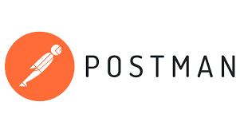

Cedars Sinai Medical Center:
Department Search Directory App
Designed an intuitive interface to help Cedars Sinai employees easily find department names and extension numbers.

Context
A common problem lately for the employees at Cedars Sinai Medical Center is simply finding a department's name and extension number. Employees would have to ask around or find it through a contact log. To counteract this, I developed a search directory app known as "X-Tensions" to help the Cedars Sinai employees easily find the department name and extension number they are looking for.
How It Works
- Sign-In
-
- Employees enter an exclusive login to use the app.
- Search
-
- Use the search bar to find intended department name.
- Scroll to see all the departments.
- Sign-Out
-
- Employees can sign out when finished with the app.
Technologies Used



- React Native
-
- Used to develop the cross-platform mobile application for both iOS and Android.
- Implemented features such as the login screen, search directory, and other functionalities of the app.
- Postman
-
- Used for testing API endpoints and making HTTP requests during the development and testing phases.
- Verified the functionality of the backend API or server.
- MongoDB Atlas
-
- Used to create a serverless API.
- Hosted the database for storing department information.
- Handled data management, storage, and retrieval for the application.
- Firebase
-
- Provided secure user authentication for the app.
- Expo Go
-
- Used for testing and running the React Native application on real devices during development.
- Implemented features such as the login screen, search directory, and other functionalities of the app.
- Figma
-
- Used for designing purposes.